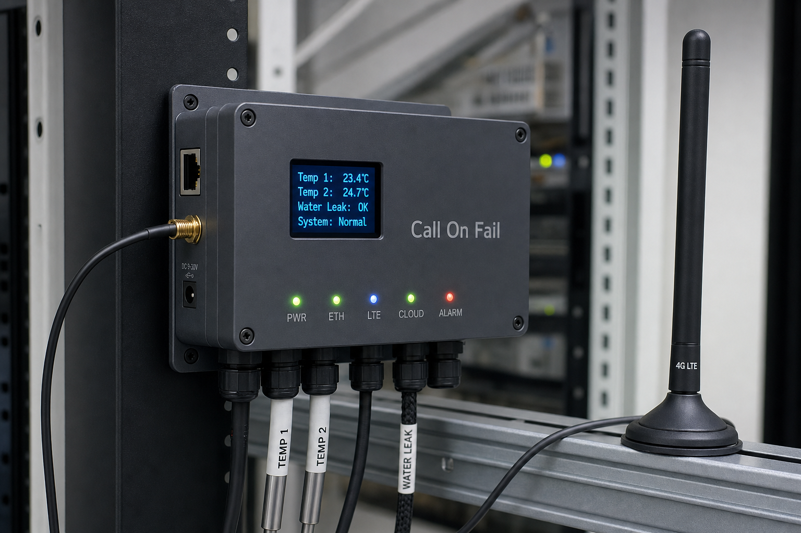
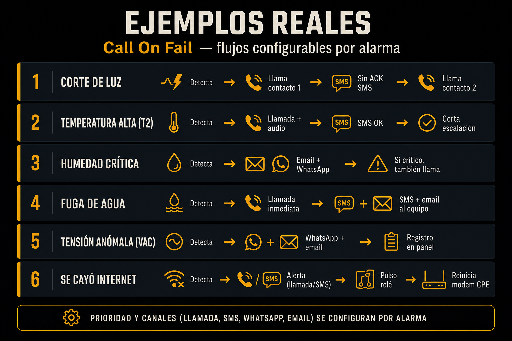

Call On Fail
Si es crítico,
te llamamos.
Un equipo para tu sala técnica o rack. Si se va la luz, hay una fuga o se corta Internet, te llama al celular — aunque el switch del sitio esté muerto.
Qué mira
Temperatura, humedad, agua, luz, red. Lo de siempre en una sala chica… pero con un equipo que no se calla si se cae el switch.
- Temperatura en el rack, cerca del AA y en el ambiente
- Humedad
- Fuga de agua en el piso
- Corte de luz y problemas de tensión
- Si se cayó Ethernet o Internet
- Contactos secos: puerta, alarma del edificio, lo que cablees
- Pantalla y LEDs en el frente

Y si hace falta, mueve algo
Hay dos relés. Sirven para más que prender una lucecita.
- Internet abajo Le corta la luz al modem unos segundos, lo reinicia y te avisa. A veces con eso alcanza.
- Algo grave Puede disparar una sirena en la sala mientras te está llamando.
- Como lo armes Vos elegís qué relé usa cada alarma y cuánto dura el pulso. Sin reiniciar el modem cada dos minutos.
Primero te llama a vos
Suena el celular y escuchás qué pasó: luz, agua, temperatura. Si ya lo viste, respondés OK o 1 por SMS y listo. Si no contestás, llama al siguiente de la lista. WhatsApp y mail pueden ir al mismo tiempo; la llamada es lo que no se pierde en la bandeja.
Llamada SMS WhatsApp Email

Si se cae la red
Casi todos los monitores de sala te avisan por la misma red que se acaba de caer. Ahí no sirven. Este equipo trae chip LTE y batería: si se va el switch o la luz, igual te puede llamar.
- La llamada sale del modem en la sala, no de un mail perdido
- Batería propia: sigue andando con corte de luz (horas, no minutos)
- Si vos no atendés, llama al segundo número
- Si se cayó Internet, puede reiniciar el modem del cliente
- SNMP: lo sumás a Zabbix, PRTG o lo que ya tengas
Día a día y plan B
Con red normal usa el cable. El celular y la batería están por si las cosas se ponen feas.
- Ethernet Para el día a día: estable y sin drama
- Se cae la red del rack Sigue por LTE y te llama igual
- Se corta la luz Entra la batería; el equipo no se apaga de una